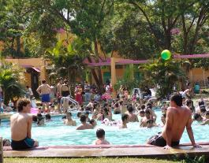
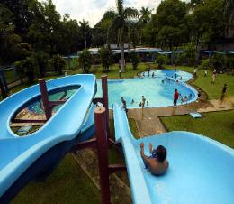

VISITA NUSTRAS PICINAS

Fundado en 1973 y conocido anteriormente como “Cáceres Lenoff”.
¿Dónde está?
El Centro Recreativo “EDC” está ubicado en el parque del mismo nombre,
dentro del municipio de Amatitlán.
¿Qué ofrece?
- piscinas
- toboganes
- canchas deportivas
- salón de juegos
- churrasqueras y todo lo necesario para pasar un día de diversión con la
familia o amigos.
¿Qué se recomienda llevar?
- Ropa cómoda
- Telas frescas
- Zapatos tenis o sandalias
- Protector solar
- Gorra o visera
- Cámara para guardar un bello recuerdo
- Binoculares para observar desde arriba la actividad en el lago
¿Cuál es el horario?
08:00 a 16:00 horas de miércoles a domingo
¿Cuánto cuesta?
El ingreso es exclusivo para trabajadores del Estado y no tiene costo alguno. Lo
único que se debe hacer es presentar el carné de recreación del Estado.
